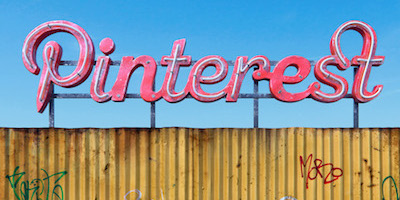
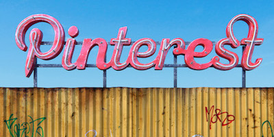

Decaying Silos as dead malls
 

Decaying malls that used to be the place to be seen but are now losing out to the open web is a good metaphor for the coming transition. It reminds me of the old Yahoo billboard in SF, and MySpace’s Trailer Park:
Because this is where we are with Facebook now - it has always felt like a mall, as Gibson said:
I was never interested in Facebook or MySpace because the environment seemed too top-down mediated. They feel like malls to me.
Now we want a more organic, handmade web again.
This also made me think about how the silos degrade our view of the web, insisting that we give them custom markup so our posts fit into their rigid worldviews, each one with a photo preview and title, interchangeable, fitting into their product racks.
So I thought I'd use his images to give each silo a custom preview of this post.
If you share this on twitter, you'll see the twitter image.
On facebook the soi-disant Open Graph is desired - both of these demand separate metadata to work.
Pinterest has a share button that wants further data in its markup.
Google won't agree what it wants. G+ says "use microdata", but will use facebook markup if no google mandated markup is there, and it ignores JSON-LD.
Google search leads you down the endless JSON-LD void of schema.org (but also wants a meta tag for description).
So each silo wants it's own special custom markup - mostly to display the same image-heavy degraded view of the real site.
Even Slack gets in on the act - it wants oEmbed markup with a separate URL to fetch, a retro format from Yahoo and Pownce, so I made that too.
Now, this